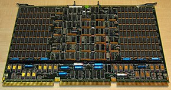
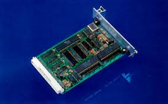

PLACA BASE


PLACA BASE |
|
|
|
|
| ¿Qué es la Memoria RAM? | ¿Qué es la memoria RAM CMOS? |
|---|---|
|
La Memoria de Acceso Aleatorio (RAM) es un componente esencial en una computadora que se utiliza para almacenar temporalmente datos y programas en uso. Es un tipo de memoria volátil que permite a la CPU acceder rápidamente a la información que necesita para ejecutar aplicaciones y tareas. |
La memoria RAM CMOS es una pequeña área de memoria volátil que se encuentra en la placa base (mainboard) de una computadora. No debe confundirse con la memoria RAM principal, que es donde se almacenan los datos y programas en ejecución. La memoria RAM CMOS se utiliza para almacenar configuraciones críticas y datos de bajo nivel, como la fecha y la hora del sistema, la configuración del hardware, las contraseñas de la BIOS y otros parámetros del sistema. |
| Funciones de la Memoria RAM |
Función de la Memoria RAM CMOS |
La RAM desempeña un papel crucial en el rendimiento de una computadora, ya que almacena datos y programas
que se utilizan activamente. Algunas de sus funciones principales son:
|
La memoria RAM CMOS se utiliza para retener información importante que debe mantenerse incluso cuando la computadora está apagada.
Algunas de sus funciones principales son:
|
| Tipo de Memoria RAM |
Problemas comunes de la memoria CMOS |
| Existen varios tipos de memoria RAM, incluyendo DDR, DDR2, DDR3, DDR4, y DDR5, cada uno con diferentes velocidades y capacidades. La elección de la memoria RAM adecuada depende de las necesidades específicas de tu computadora y tu presupuesto. | Los problemas comunes relacionados con la memoria RAM CMOS incluyen la pérdida de configuraciones, errores de fecha y hora incorrectos, o la incapacidad de acceder a la computadora debido a una contraseña de BIOS olvidada. Estos problemas a menudo se pueden resolver ingresando a la BIOS y realizando ajustes adecuados. |
| Historia de la Memoria RAM? | Historia de la memoria RAM CMOS? | ||
|---|---|---|---|
|
A fines de la década de 1940, la memoria RAM primitiva utilizaba tubos de Williams, también conocidos como tubos de almacenamiento de imágenes. Estos dispositivos eran tubos de vacío que podían almacenar y recuperar datos como cargas eléctricas en una pantalla de cátodo. Más tarde, a mediados de la década de 1950, se desarrollaron las memorias de núcleos magnéticos, que utilizaban pequeños anillos magnéticos para representar bits. Eran más fiables y duraderas que las tecnologías anteriores. Ya a finales de la década de 1960 y principios de la década de 1970, se introdujo la memoria RAM dinámica (DRAM), que utilizaba condensadores para almacenar datos. A diferencia de las tecnologías anteriores, la DRAM requería actualizaciones periódicas (refrescamiento) para mantener la integridad de los datos. A mediados de la década de 1990, se introdujo la SDRAM, que sincronizaba la velocidad de la memoria con el reloj del sistema, mejorando la eficiencia y el rendimiento en comparación con la DRAM convencional. Ya con la entrada de siglo, la DDR SDRAM se convirtió en el estándar dominante. Esta tecnología permitió transferencias de datos más rápidas al enviar datos en ambos flancos de la señal del reloj. Después lo largo de los años, se han introducido nuevas generaciones de tecnologías DDR para mejorar la velocidad, la eficiencia y la capacidad de las memorias RAM. La DDR4 ha sido la más común en sistemas modernos, pero a medida que evoluciona la tecnología, se introducen versiones más avanzadas, como la DDR5. |
 |
A medida que las computadoras evolucionaron, se volvió crucial mantener ciertos datos, como la configuración del sistema y la hora del reloj en tiempo real (RTC), incluso cuando la computadora estaba apagada. Se comenzaron a utilizar baterías de celda de reloj para alimentar una pequeña porción de memoria que conservaría estos datos, incluso en ausencia de energía. Por esta necesidad, se implementó la memoria RAM CMOS utilizando celdas de memoria CMOS. Esta memoria se utilizó principalmente para almacenar la configuración del sistema (como la configuración del BIOS/UEFI) y otros datos cruciales que debían conservarse incluso cuando la computadora estaba apagada. La memoria RAM CMOS se utilizó en la implementación de la CMOS BIOS en las computadoras, y más recientemente el UEFI, almacenan información crucial para el arranque y la configuración del sistema en esta memoria. Por otr lado, aunque la memoria RAM CMOS es volátil por naturaleza, la combinación de baterías de celda de reloj y técnicas de gestión de energía en placas base modernas ha permitido una persistencia de datos suficiente para mantener la configuración del sistema durante períodos prolongados sin alimentación. Esto ha hecho que esta memoria perdure pese a que surgieron alternativas como la NVRAM, como la ferroeléctrica (FeRAM) y la magneto-resistiva (MRAM) que ofrecían capacidades no volátiles. |
 |